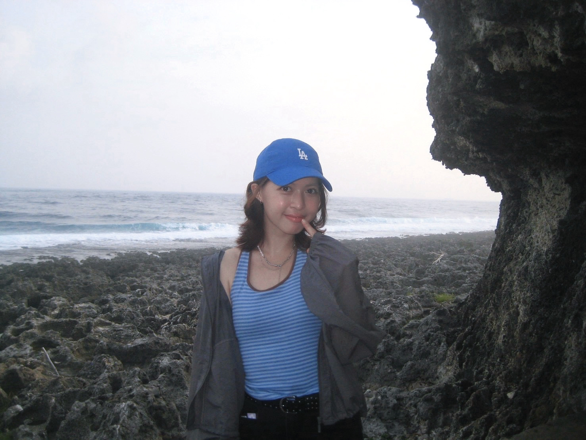

活力小太陽
喜歡搞笑、喜歡交朋友，想把溫暖和歡樂分享給身邊的人。
NICE TO MEET YOU
一個活潑開朗、熱愛搞笑，也喜歡把平凡日常過得有趣的人。很高興認識你！

願你今天也有好心情 ☀A LITTLE ABOUT ME
牡羊座 A 型
開朗 ENFP，正在認真生活中。
平常的我活潑開朗、熱愛搞笑，也很擅長交朋友。希望能像小太陽一樣，為身邊的人帶來溫暖與歡樂。
雖然看起來大剌剌、沒什麼秘密，但其實我也有細膩的一面，會默默觀察大家的情緒與狀態，也懂得社交禮儀與人際相處的小技巧。
偶爾還會突然氣質起來，展現不一樣的自己——所以，和我相處大概每天都會有一點新鮮感！
THE WAY I AM
比起高冷的距離感，我更喜歡自然、自在又有溫度的相處方式。
喜歡搞笑、喜歡交朋友，想把溫暖和歡樂分享給身邊的人。
看起來大剌剌，卻會留意大家的情緒，努力讓相處舒服自在。
活潑之外也有安靜優雅的一面，今天的我也可能和昨天不太一樣。
LITTLE JOYS
假日最期待的，就是好好打扮，再和喜歡的人一起享受生活。
試試不同的妝容和搭配，找出最喜歡的自己。
假日打扮好自己，帶著好心情出發。
把平凡的一天，變成下次還會想起的快樂回憶。